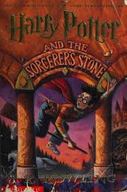
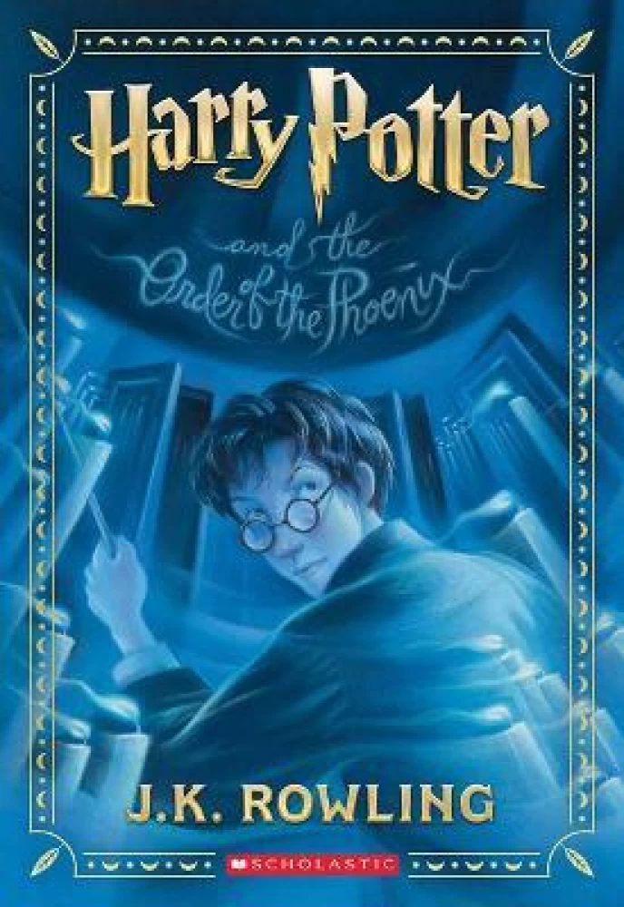
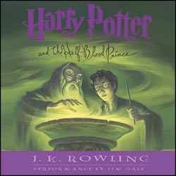
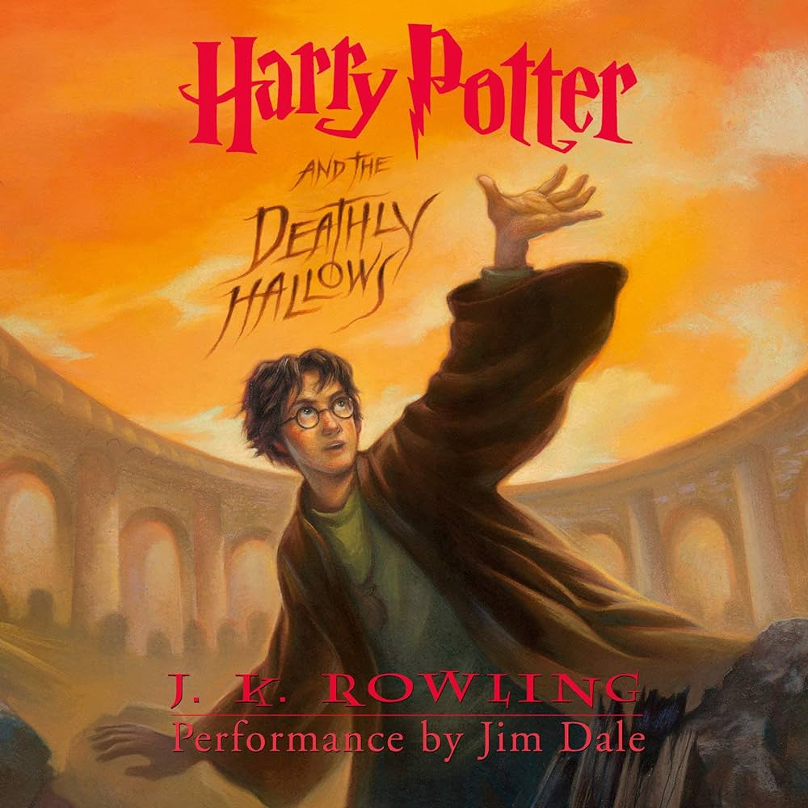

The first novel in the Harry Potter series and Rowling's debut novel,
it follows Harry Potter, a young
wizard who discovers his magical
heritage on his eleventh birthday, when he receives a letter of
acceptance
to Hogwarts School of Witchcraft and Wizardry.

The plot follows Harry's second year at Hogwarts School of Witchcraft
and Wizardry, during which a
series of
messages on the walls of the
school's corridors warn that the "Chamber of Secrets" has been opened
and that
the "heir of Slytherin" would kill all pupils who do not come
from all-magical families.

It follows Harry Potter's struggles through his fifth year at Hogwarts School of Witchcraft and Wizardry,
including the surreptitious return of the antagonist Lord Voldemort, O.W.L. exams, and an obstructive
Ministry of Magic.

Rowling, J. K. In this book, Harry Potter learns a lot
about Lord Voldemort's past, and Harry Potter
prepares for the final battle against his nemesis with the help of Headmaster Dumbledore. But in that time,
Voldemort returns to power, and makes a plan to destroy Harry.

After years of battling against the evil Lord Voldemort, 17-year-old Harry Potter is finally an adult
wizard, and he and his best friends Ron Weasley and Hermione Granger must set out on a dangerous mission to
stop Voldemort once and for all.

The story follows an unlikely friendship between Harry's middle son Albus Severus, and Draco Malfoy's son Scorpius, meeting on the train to Hogwarts in a scene that consciously mirror's Harry's first meeting with Ron and Hermione.